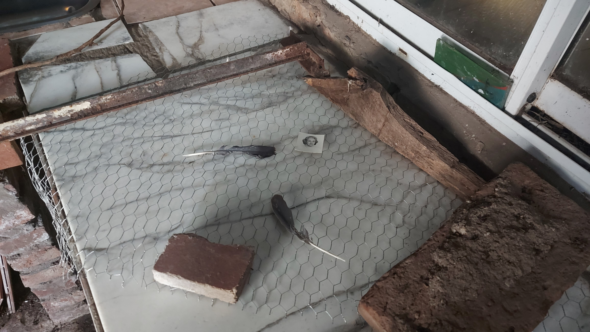
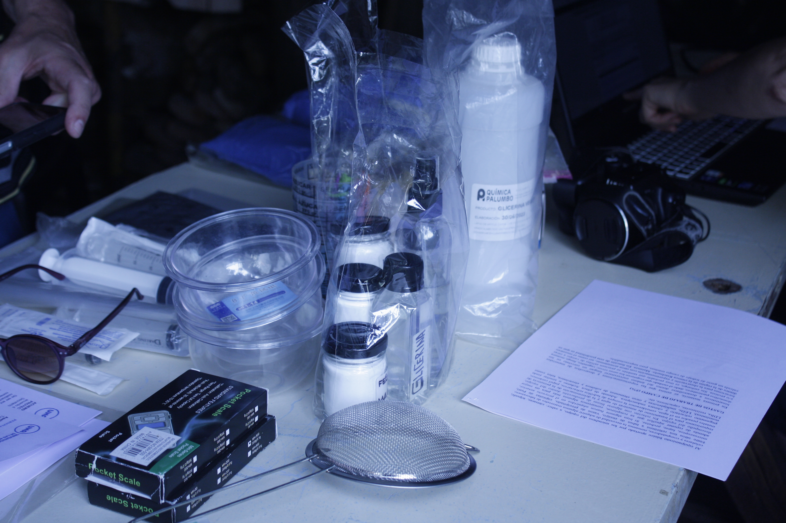
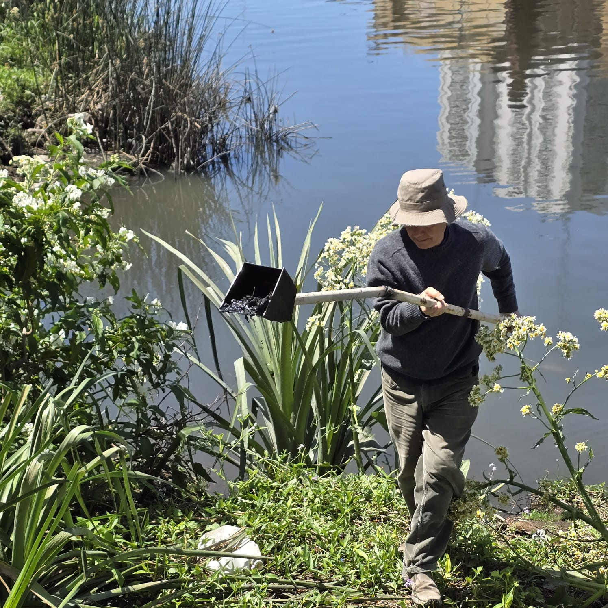
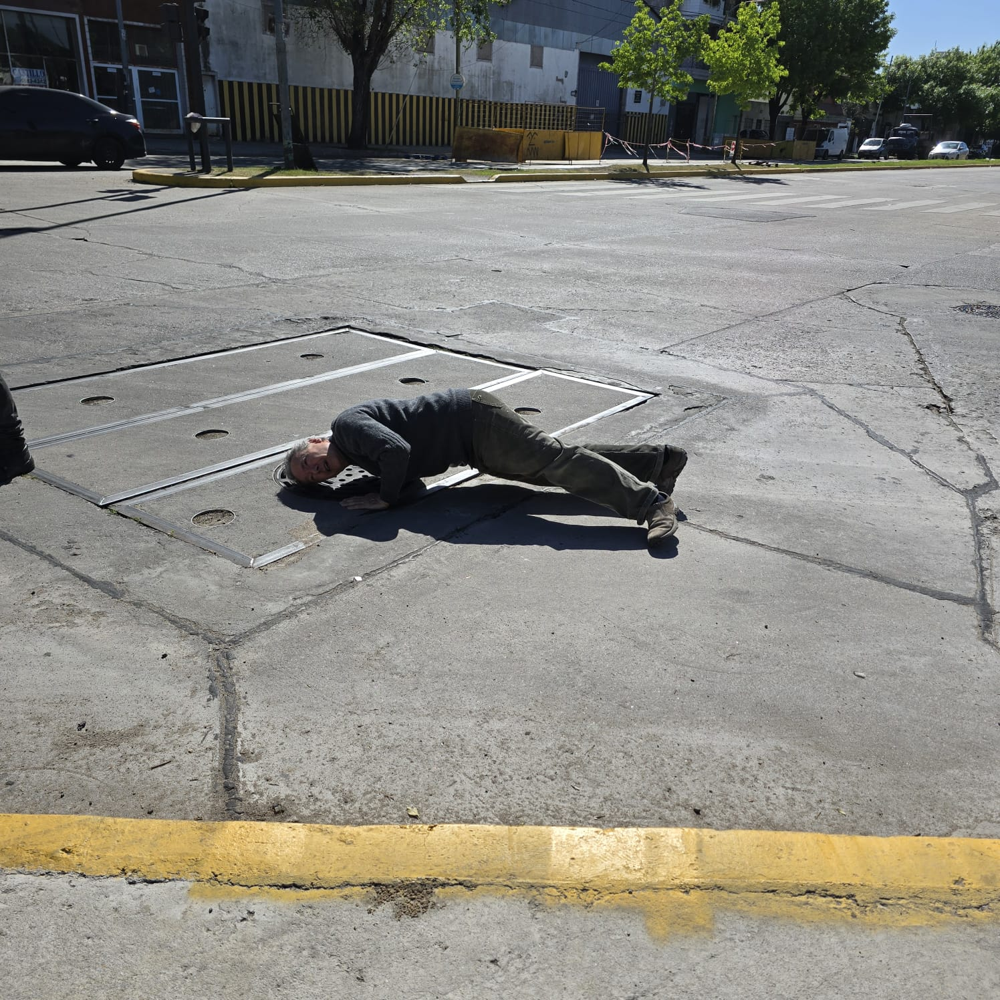
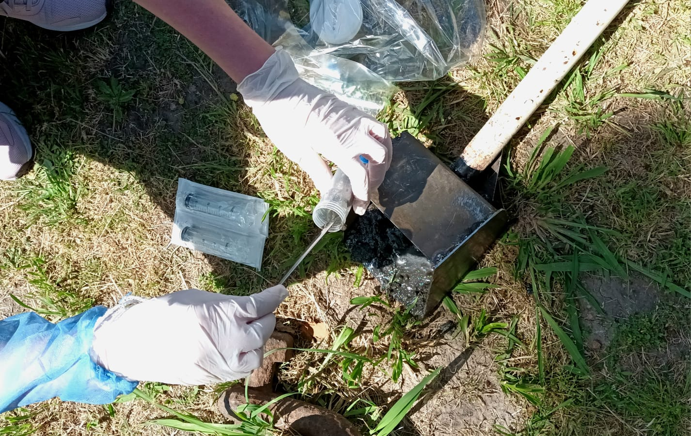
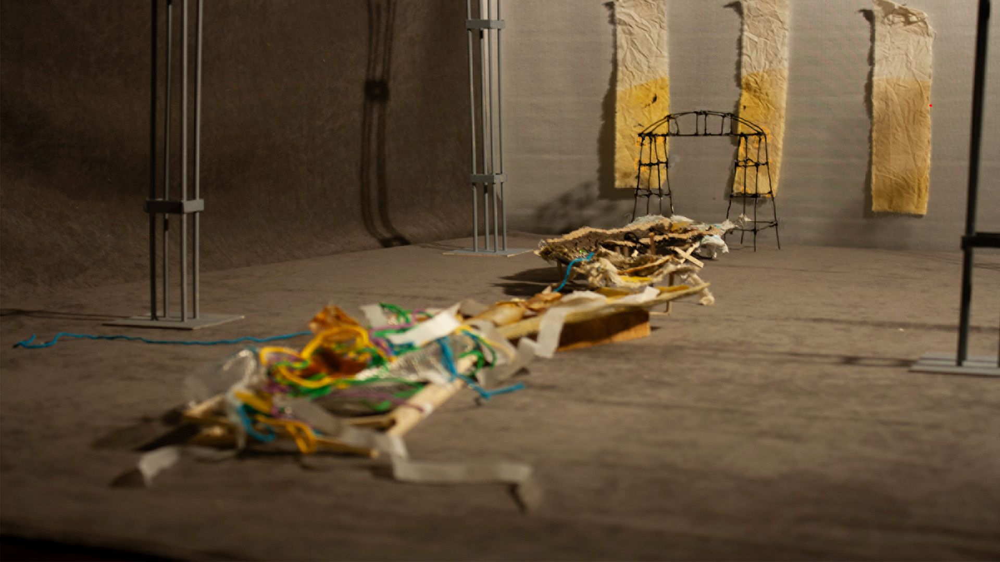
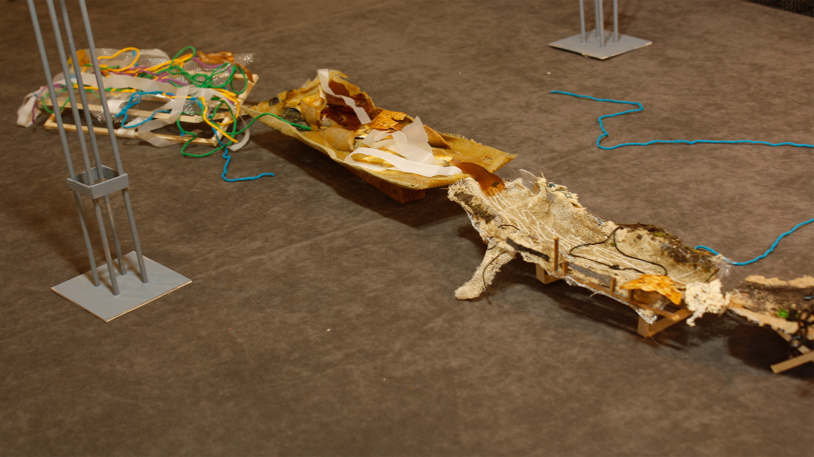
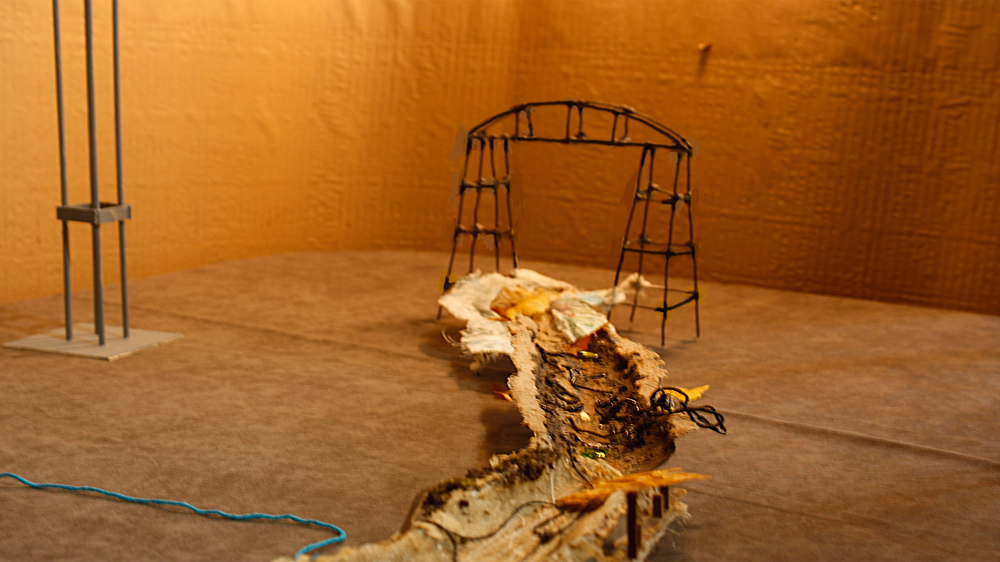
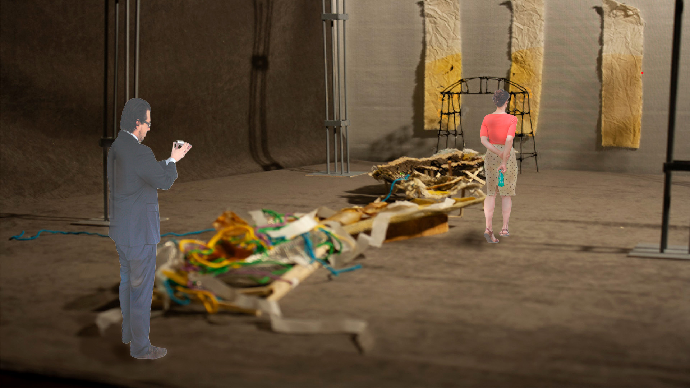

El Camino del Agua — Cuenca Matanza–Riachuelo
El proyecto propone una investigación artística sobre la cuenca Matanza–Riachuelo a
partir de procesos materiales, audiovisuales y performativos que abordan la falla, la
obsolescencia y lo no visible del territorio. Las acciones performáticas forman parte del
propio proceso de investigación y son entendidas como modos de puesta en contacto
entre cuerpo, materia e infraestructura, más que como instancias representativas.
La obra se articula como una mapobra: una estructura de gran escala construida con una
combinación de alambres, hierros, biomateriales y objetos heterogéneos que funcionan
como restos, memorias y sedimentos de una historia fragmentada.
Uno de los núcleos del proyecto es El limo del Riachuelo, una acción de extracción y
registro del barro del río mediante una pala intervenida con una cámara endoscópica.
Las imágenes resultantes no buscan representación paisajística, sino que funcionan
como imágenes operativas (Parikka): registros técnicos ligados al acto de extracción, al
contacto con la materia y a la lógica infraestructural del territorio. El limo recolectado
es posteriormente secado y sometido a altas temperaturas, esperando la aparición de
coloraciones producidas por los metales presentes en el sedimento.
En el sitio, el proyecto se manifiesta a través de registros audiovisuales de carácter
performativo y procesual. Uno de ellos pone en juego el cuerpo, el procedimiento
técnico y el error, documentando una producción fallida de biomateriales realizada con
vestimenta quirúrgica. La acción no se plantea como representación, sino como una
operación situada en la que el cuerpo interviene en condiciones de control, riesgo e
indeterminación, exponiendo la práctica y la imposibilidad de dominio total sobre la
materia.
Otro registro adopta una forma híbrida —entre fotonovela, video y pantalla partida— y
documenta una salida colectiva de exploración y captura en el arroyo Cildáñez, afluente
entubado de la cuenca Matanza–Riachuelo, y en sectores del propio Riachuelo. A través
de imágenes, sonidos y fragmentos de acción, este material da cuenta de una práctica de
deriva, recolección y observación situada, en la que el territorio aparece como resto,
interrupción y huella más que como paisaje representable.
Lejos de proponer una imagen cerrada o totalizante, el proyecto asume la costura, el
resto y el fallo como formas de conocimiento y de resistencia frente a los discursos de
eficiencia y transparencia tecnológica.
Imágenes del proyecto





Maqueta para el Palacio del Agua



